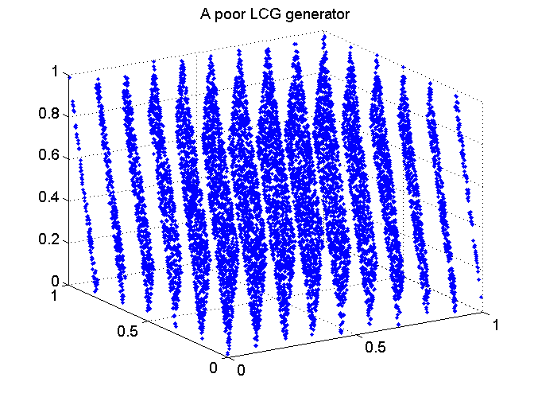
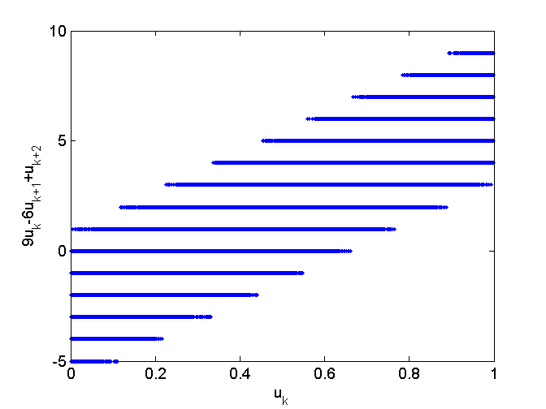
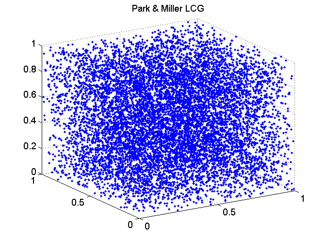
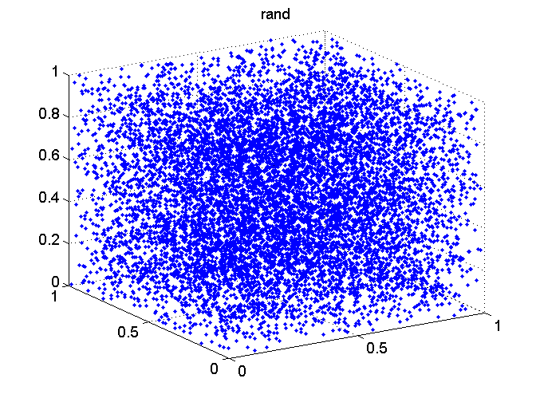

Contents
function demoCode_linearCongruentialGenerator
demoCode_linearCongruentialGenerator: linear congrential maps to generate U[0,1] pseudorandom numbers
randu: A poor LCG generator
m = 2^31; % generate integers in the range 0..(m-1) a = 65539; % multiplier c = 0; % increment k = 1969; % seed N = 30000; % number of samples % generate N samples U[0,1] U = linearCongruentialRand(N,a,c,m,k); % plot the random numbers in the unit cube figure(1); clf; nPlot = plotResults(U); title('A poor LCG generator')
Serial dependencies
9*U(n)-6*U(n+1)+U(n+2) = integer [-5..9]
figure(2); clf; indices = 1:(nPlot-2); plot(U(indices),9*U(indices)-6*U(indices+1)+U(indices+2),'.'); xlabel('u_k'); ylabel('9u_k-6u_{k+1}+u_{k+2}'); pause(3);
Park & Miller: A simple LCG generator
m = 2^31-1; % generate integers in the range 0..(m-1) a = 7^5; % multiplier c = 0; % increment k = 1969; % seed N = 30000; % number of samples % generate N samples U[0,1] U = linearCongruentialRand(N,a,c,m,k); % plot the random numbers in the unit cube figure(3); clf; plotResults(U); title('Park & Miller LCG') pause(3);
rand: built-in U[0,1] random number generator
No need to use the others!
N = 30000; % number of samples % generate N samples U[0,1] U = rand(N,1); % plot the random numbers in the unit cube figure(4); clf; plotResults(U); title('rand')
end
Auxiliary function for plots
function nPlot = plotResults(U) N = length(U); nPlot = 3*floor(N/3); plot3(U(1:3:nPlot),U(2:3:nPlot),U(3:3:nPlot),'.'); grid on axis([0 1 0 1 0 1]) view(-32,22) end